Premium visual identity pass
Review captures
Every capture is a real render of the concept route on this deployment, taken with Chromium at the stated device pixel ratio. Click a tile for the original file.
{kind=link}
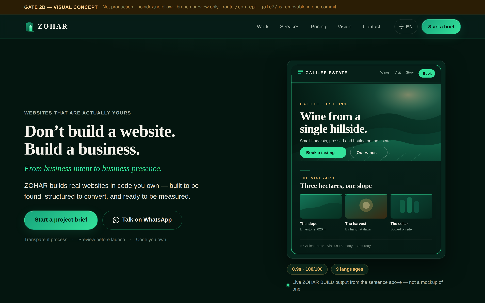
English desktop hero
1440×900 @2× → 2880×1800 · 627 KB · PNG
{kind=link}
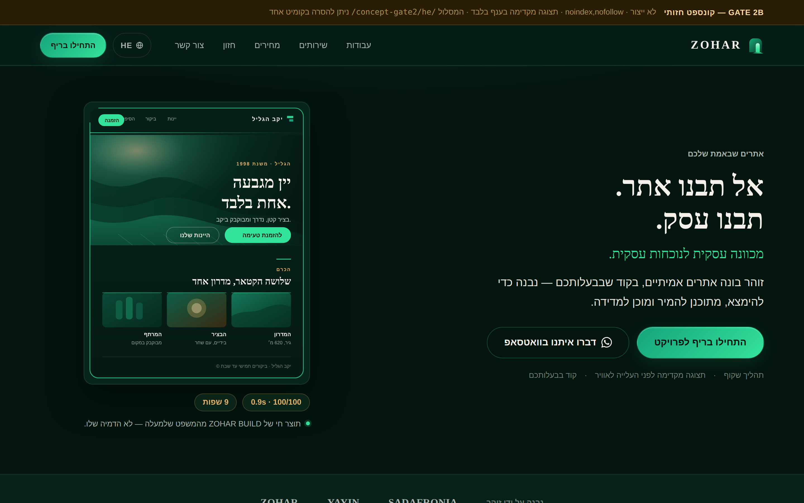
Hebrew desktop hero (RTL)
1440×900 @2× → 2880×1800 · 502 KB · PNG
{kind=link}
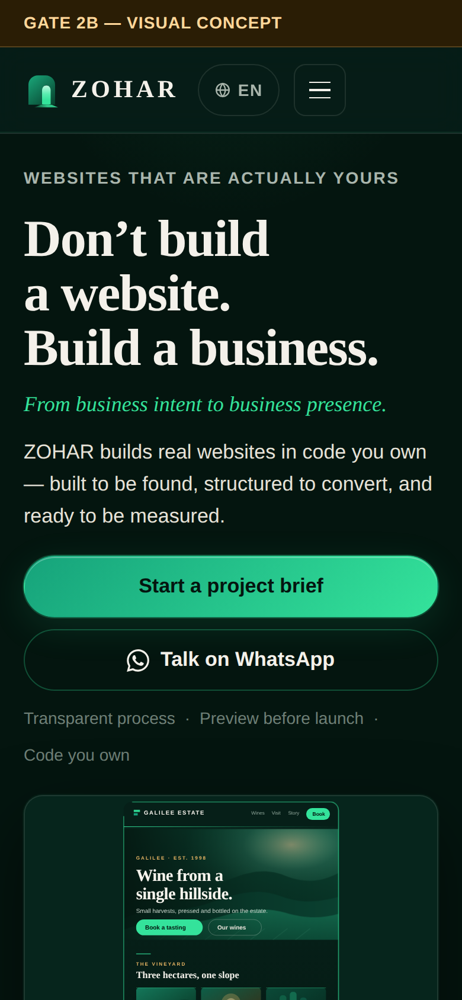
English iPhone hero
390×844 @2× → 780×1688 · 244 KB · PNG
{kind=link}
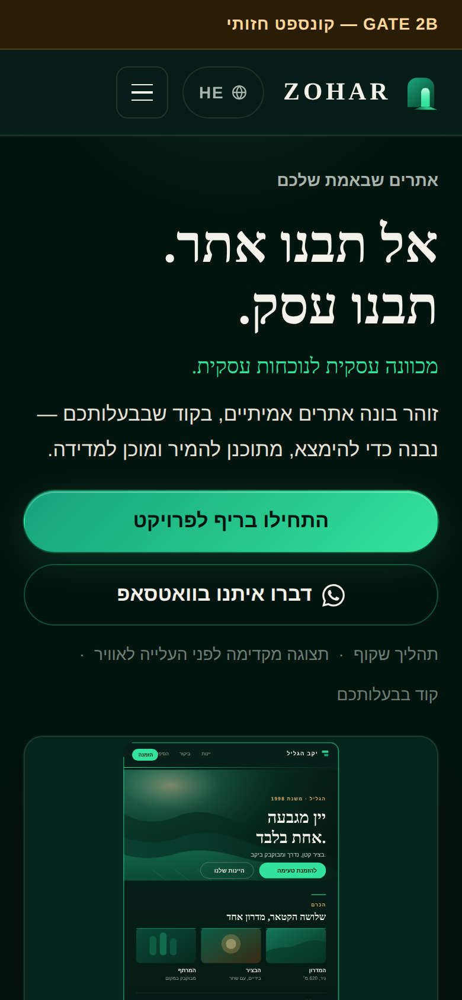
Hebrew iPhone hero (RTL)
390×844 @2× → 780×1688 · 216 KB · PNG
{kind=link}
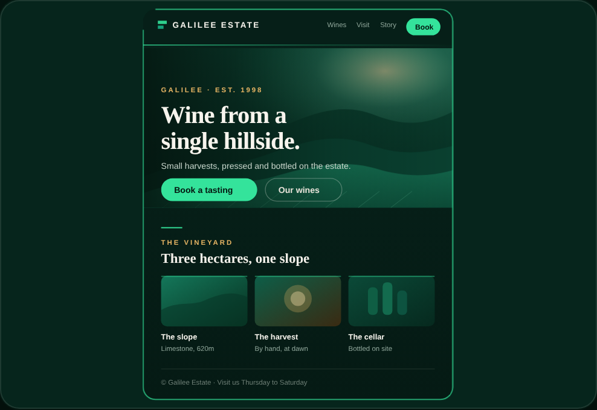
BUILD demonstration — final static frame (EN)
element @2× · 148 KB · PNG
{kind=link}
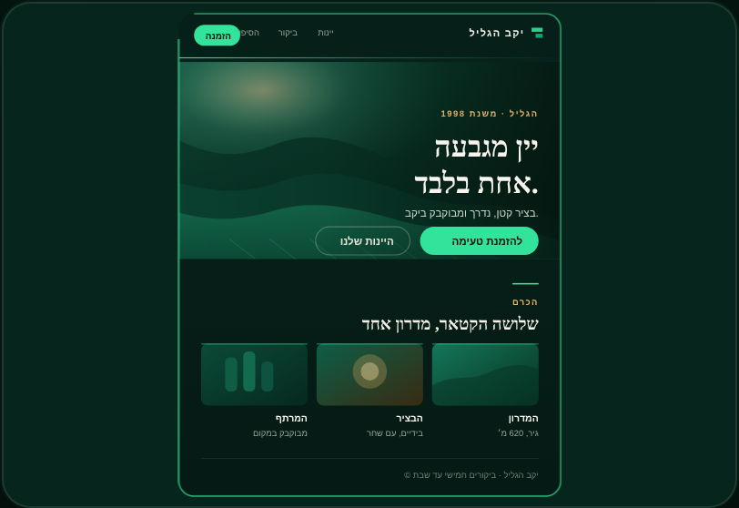
BUILD demonstration — final static frame (HE)
element @2× · 100 KB · PNG
{kind=link}
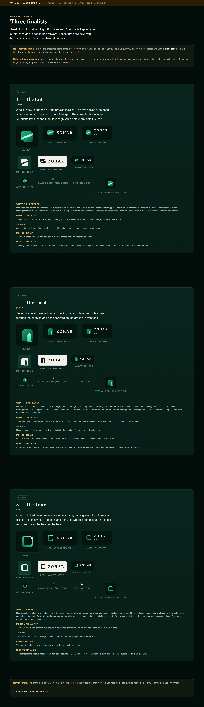
Logo finalists — three directions
1440 wide @2×, full page · 2461 KB · PNG
{kind=link}
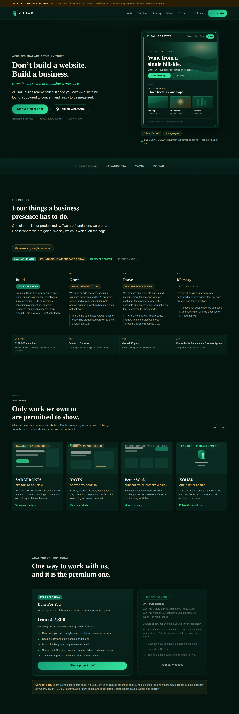
Full homepage — hero → commercial offer (EN)
1440 wide @1.5×, full length · 1241 KB · PNG
{kind=link}
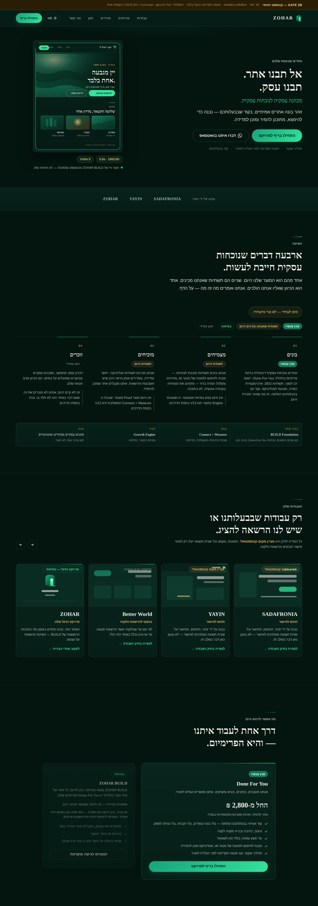
Full homepage — hero → commercial offer (HE)
1440 wide @1.5×, full length · 976 KB · PNG
{kind=link}
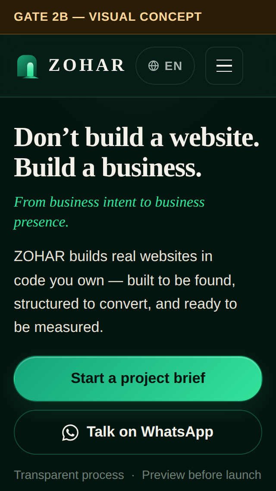
Small floor
320×568 @2× · 147 KB · PNG
{kind=link}
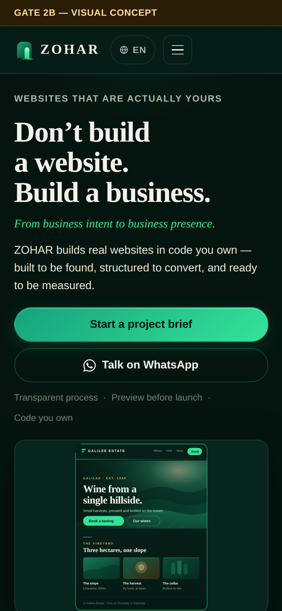
Pro Max
430×932 @2× · 280 KB · PNG
{kind=link}
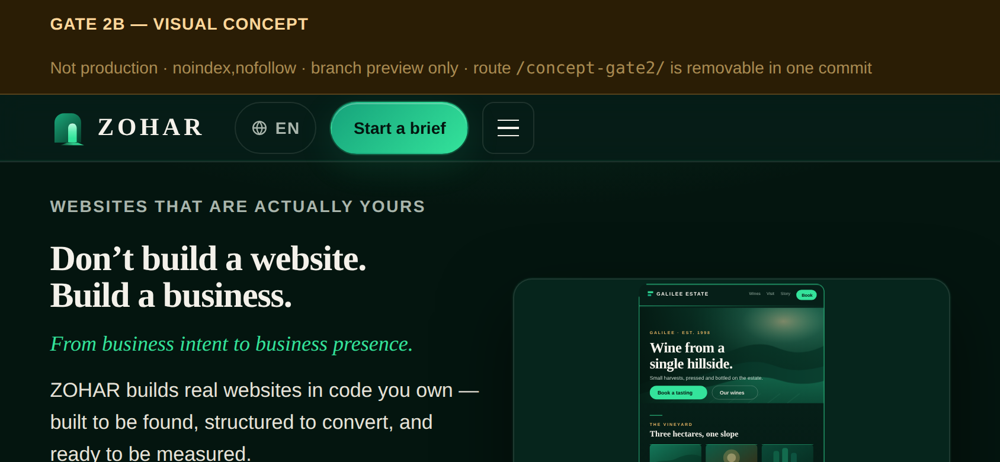
Landscape phone
844×390 @2× · 201 KB · PNG
{kind=link}
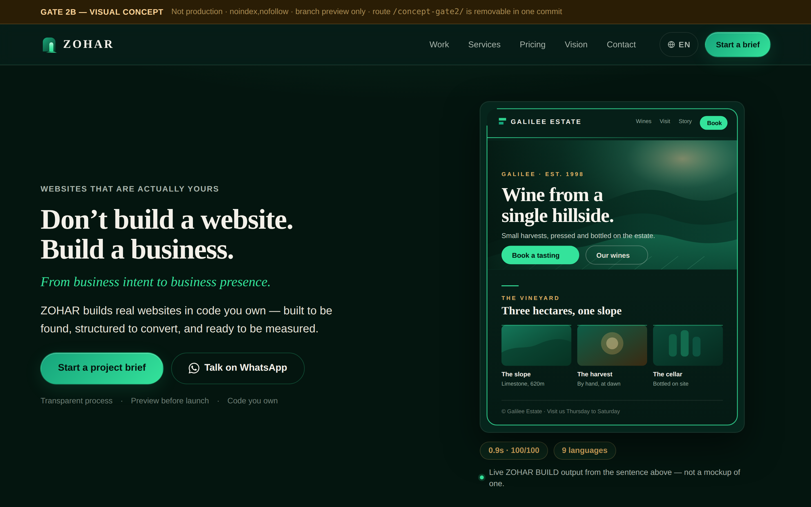
Reduced motion (English)
1440×900 @2× · 761 KB · PNG
Note. These are static captures for review. The live pages are
/concept-gate2/,
/concept-gate2/he/ and
/concept-gate2/logos/.